Roof¶
Let’s make a roof.
1. Select Extrude tool leaving polygons and edges unselected. If the current tool is Extrude Edge or Extrude Multiple, Press ESC to change to Extrude tool. Check out if “Leave Side Edges” property in the inspector is on. If not, check it. Put the mouse cursor on a surface out of two roofs and drag it in the way of the normal direction of the surface. And then fill 0.1m in on Height parameter in the inspector.
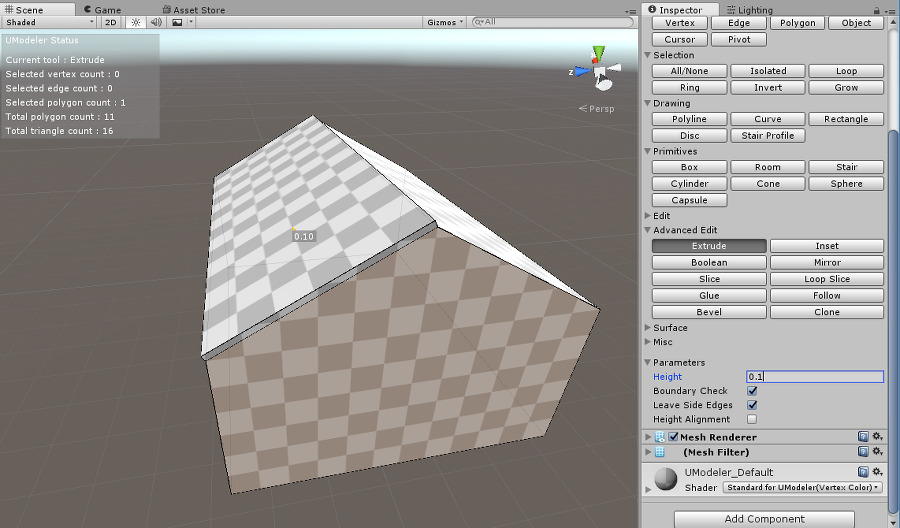2. Holding Shift and click LMB on the other roof surface to repeat the former behaviour. In this case the repeated behaviour will be to raise a surface up by 0.1m.
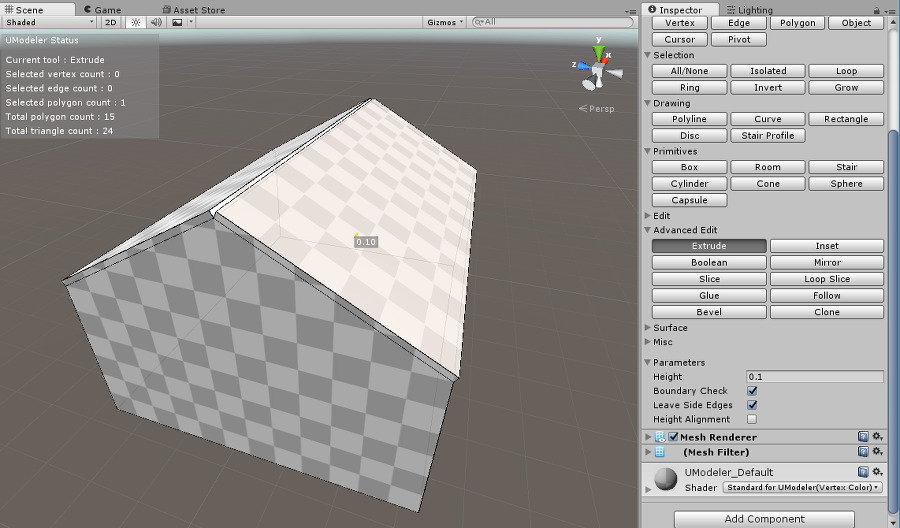3. It’s time to make a roof peak. Select Edge tool and select two edges at the top like the following image. In order to select two edges at the same time. you should hold CTRL as LMB gets down so that the second edge is selected.
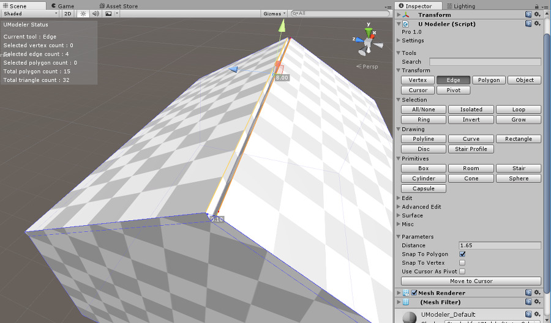
- Select Bridge tool at this point. You’ll find out that the space between the two selected edges are filled with a polygon.
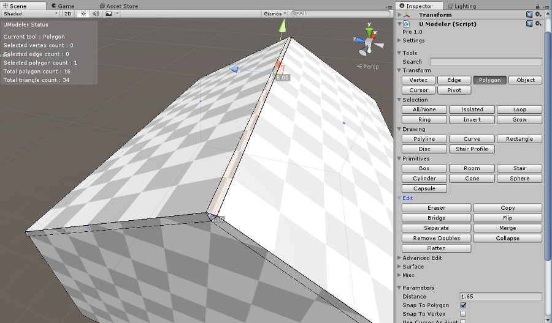
- Choose two polygons below the polygon made in step 4 using Polygon tool. You should hold CTRL when the second polygon is selected.
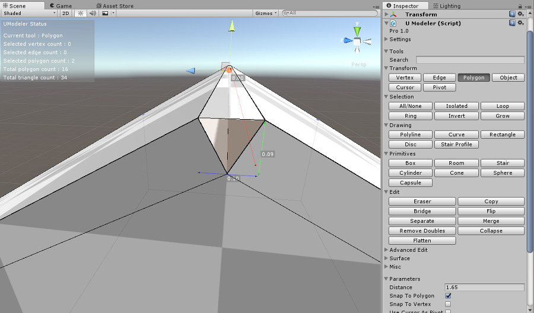
- Go to Eraser tool to remove the selected polygons.
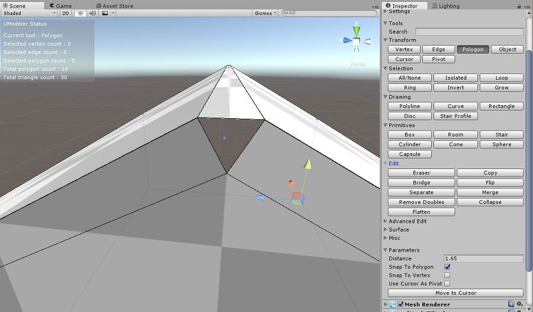
- Now you should fill a triangle hole shown in an image below. Select two edges consisting of the triangle with Edge tool.
- Go to Bridge tool at this point to fill the hole. The opposite triangle hole should also be filled as you did in step 7 and 8.
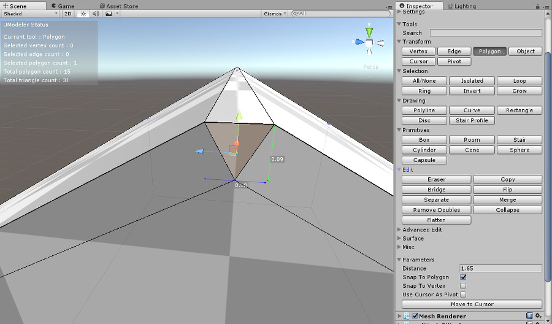
- Draw an edge that connects two center points of the two edges of the top polygon like the following image.
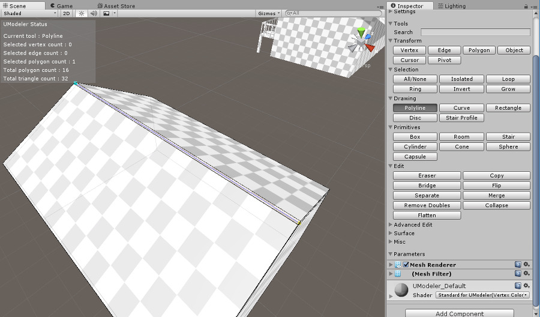
- Select Edge tool and choose the edge drawn in step 9. Move the up arrow of the gizmo up by draggina a mouse up. How high the arrow moves up doesn’t matter.
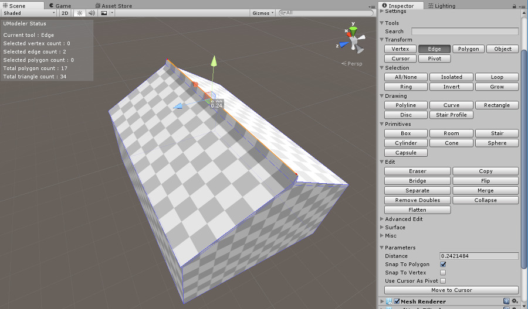
- Select a polygon at the top like below with Polygon tool.
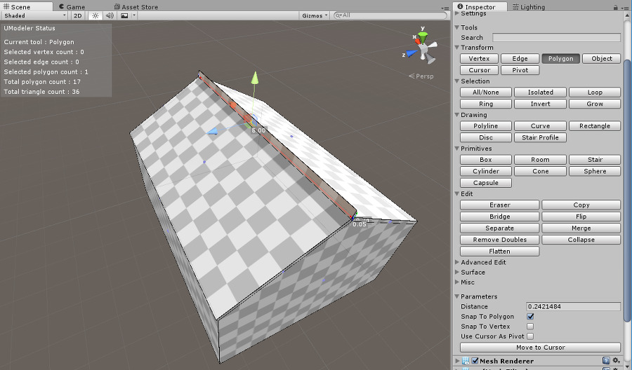
- Select a wide roof polygon just below the polygon selected in step 11 holding CTRL.
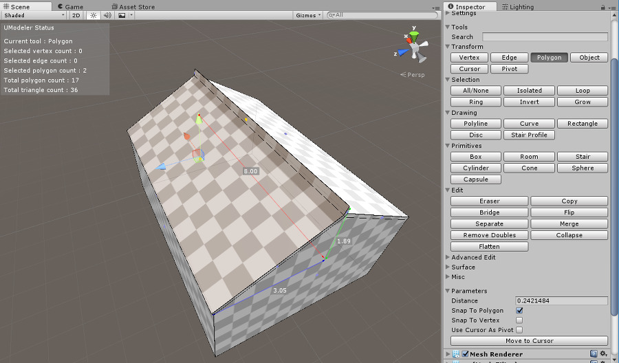
- Go to Flatten tool to flatten the selected two polygons.
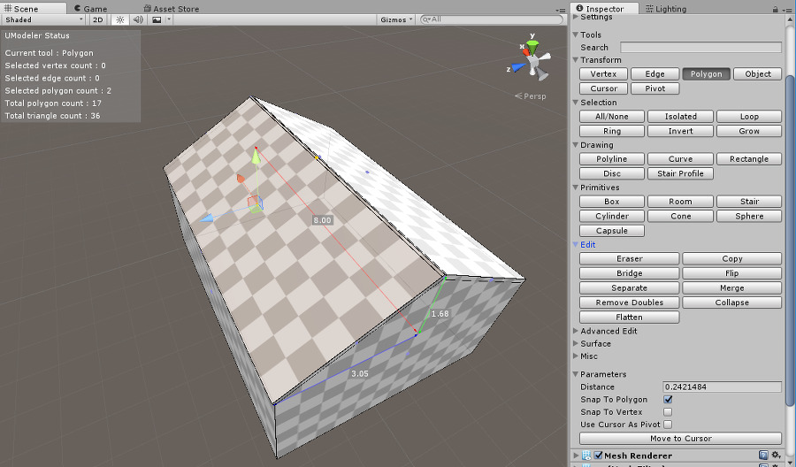
- You should also flatten the other side of the roof likewise.
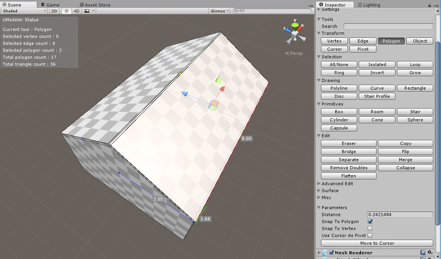15. Go to Eraser tool after deselecting vertices/edges/polygons by pressing ESC if they are selected. You’ll delete two edges at the top on the roof. Move the mouse cursor to one of the two edges as below. When the cursor gets close enough to the edge, it’ll be snapped to the edge and the cursor color will change.
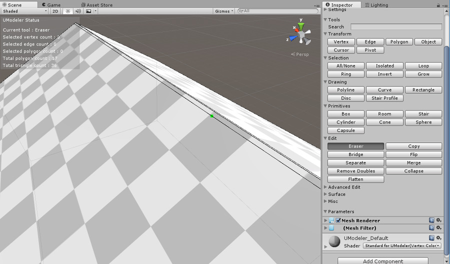
- Press LMB at this point to remove the edge.
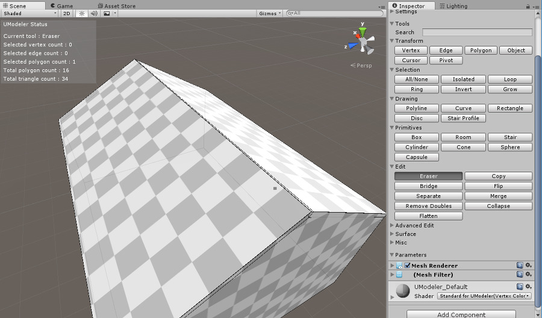
- The other edge should also be removed likewise.
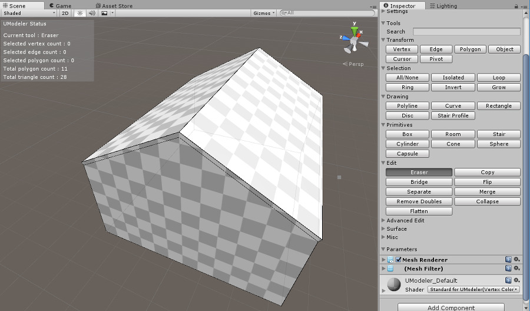18. You’ll extend the roof. Go to Extrude tool and pull the front of the roof by 0.425m. “Leave Side Edges” property has to be disabled while doing this.
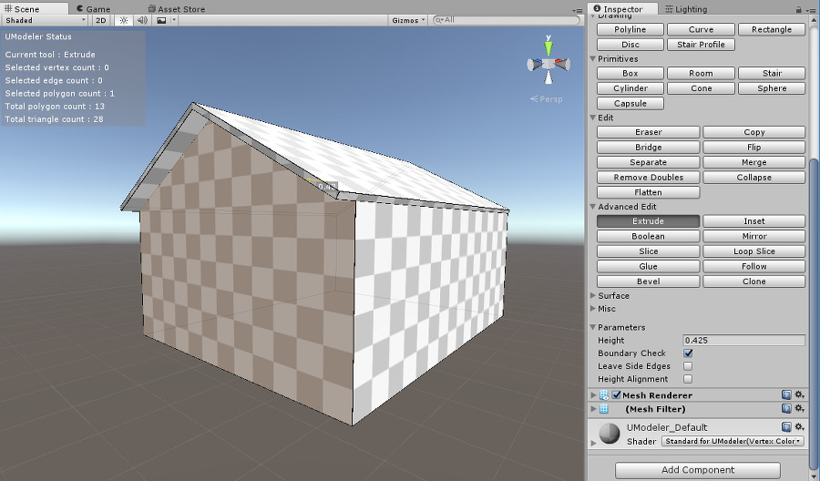
- Move the camera to the back of the roof. Click LMB holding SHIFT to repeat the step 18.
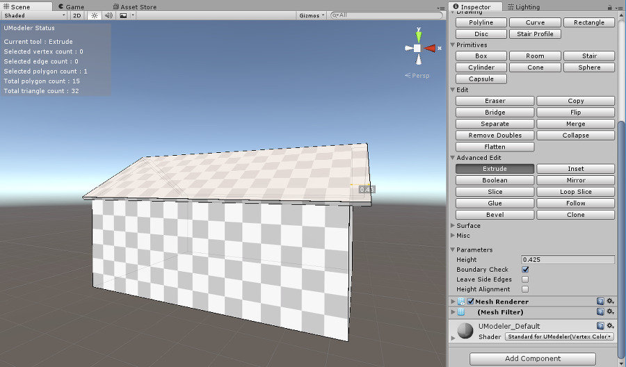
- The sides of the roof also need to be pulled by 1m as you did in step 18 and 19.
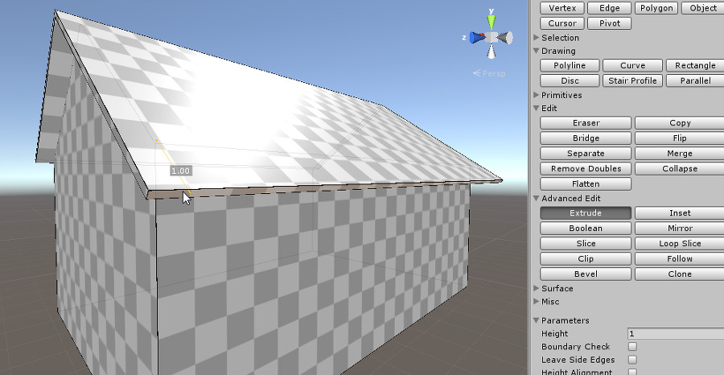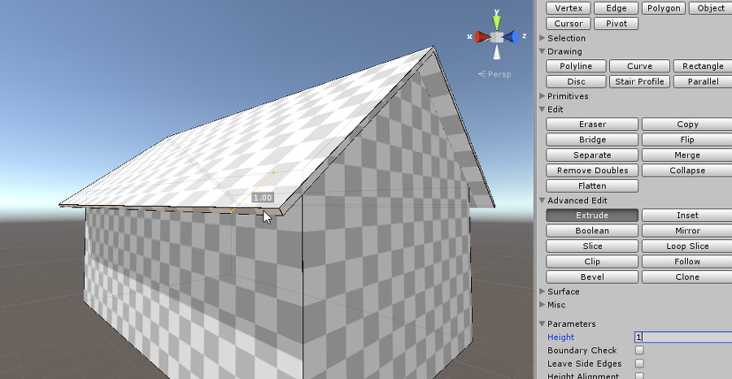
- Finally the roof has been done.
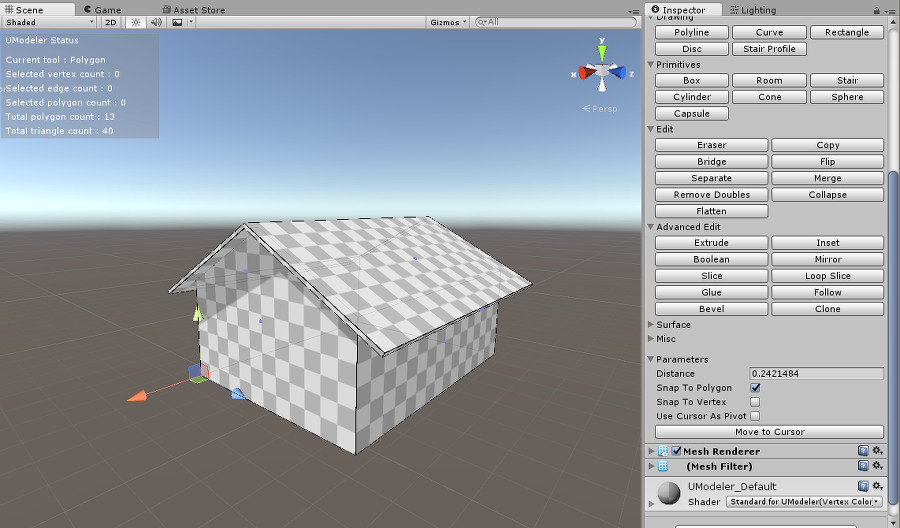